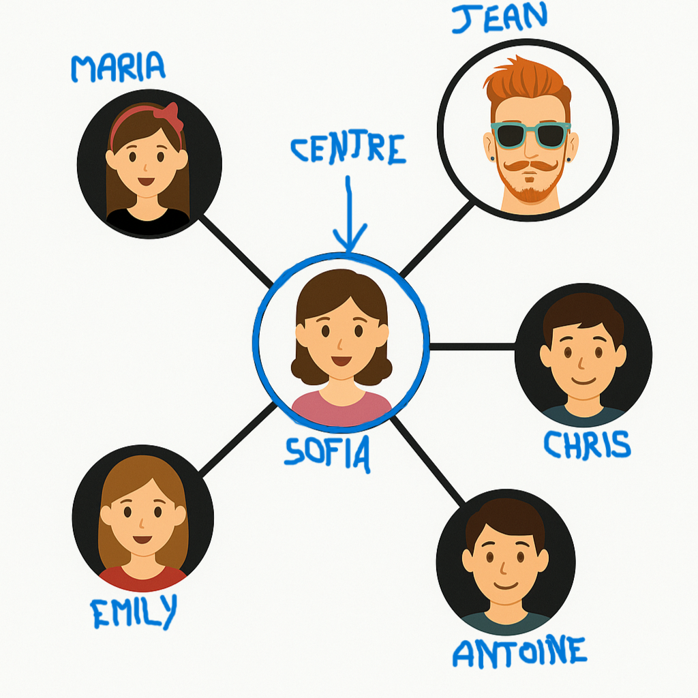

Bienvenue sur ce cours de SNT, mes amis.
Je vais me faire un plaisir de vous faire découvrir cette matière passionnante :)
La SNT (Sciences Numériques et Technologiques) est une matière qui ne se présente aux élèves qu'en classe de Seconde. Elle englobe plusieurs chapitres à propos de programmation (Python...) ainsi que certains thèmes concernant des objets et systèmes informatiques du quotidien, tels que les réseaux sociaux ou le web.
Cependant, j'ai pleinement conscience qu'apprendre une toute nouvelle matière peut s'avérer très difficile, ce pourquoi j'ai développé ce site pour vous expliquer au mieux chacun des différents thèmes abordés en cours de SNT.
NAVIGATION RAPIDE
Programmation Python
Données Structurées
Les Réseaux Sociaux
Informatique Embarquée & Objets Connectés
Photographie Numérique
Localisation & Cartographie
Internet & Web
Programmation Python
.jpg)
I. Affectation de variables
Lorsqu'on veut stocker des valeurs (pour les réutiliser ensuite par exemple), il est important de les affecter à des variables . Ces variables peuvent être nommées comme vous le voulez, et permettent de réutiliser des valeurs au fur-et-à-mesure du programme.
Par exemple:

Ici, a, b et calcul sont des variables: elles servent à stocker respectivement les valeurs 5, 9 et la somme des variables a et b, contenant elles-mêmes les valeurs 5 et 9.
Il est important de savoir qu'une variable prendra toujours la dernière valeur qui lui a éte affectée.

Ici, n1 subit une modification: on lui a ajouté 1, donc dorénavant, la valeur affectée à n1 sera 2.
II. Types de variables
Il esiste plusieurs types de variables en langage Python. Elles seront notamment utiles lorsqu'un utilisateur affectera lui-même des valeurs à des variables.
Parmi elles, on retrouve:
- int : lorsqu'il s'agit d'un nombre entier relatif.
- float : lorsqu'il s'agit d'un nombre décimal (à virgule) relatif. Les virgules sont remplacées par un point pour éviter les confusions.
- string (abrégé str ): lorsque la variable contient une chaîne de caractères (quand d'autres caractères que des nombres entrent en jeu).
- list : lorsqu'il s'agit d'une liste de nombres les uns à la suite des autres, séparés par des virgules et entre crochets. Exemple: [1, 2, 3].
- booléens (abrégé bool ): il n'en existe que deux de ce type, True (vrai) et False (faux). Ceux-ci permettent de vérifier des conditions selon qu'elles soient vraies ou fausses. ATTENTION: l'orthographe et les majuscules doivent être respectées.
III. Entrées et sorties
1. Entrées
Lorsque l'utilisateur doit affecter lui-même des valeurs à des variables, on utilise la fonction input. Celle-ci demande à l'utilisateur de rentrer une valeur, de sorte que le programme continue ensuite de s'exécuter en tenant compte des nouvelles valeurs. Cependant, il faudra adapter le programme en fonction du type de valeurs que l'utilisateur est censé rentrer grâce aux types de variables.
Par exemple, si l'utilisateur doit rentrer un nombre entier, il faudra écrire dans le programme: variable=int(input()).
Remarque: il est possible de donner une instruction à l'utiliasteur en l'écrivant entre guillements entre les parenthèses.
Par exemple:

Le message suivant apparaîtra donc à l'écran:

2. Sorties
Lorsque vous désirez que le programme affiche quelque chose à l'écran, il faudra utiliser la fonction print. Ce que cette fonction affichera se trouvera dans la console, c'est-à-dire dans un cadre en dehors du programme. Pour cela, il faudra placer des parenthèses juste après la fonction print, dans lesquelles il faudra écrire entre guillemets ce que vous voulez. Par exemple:
print("Tout est super génial") affichera dans la console "Tout est super génial!".
ATTENTION: si vous ne mettez pas de guillemets, le programme considèrera votre message comme une variable, et celle-ci n'aura aucun sens (message d'erreur) si elle n'a pas été définie auparavant. Exemple:

Le programme affichera donc 14 dans la console, puisqu'il aura additionné les valeurs correspondant à n1 et n2. Il est également possible de combiner les deux, à condition de vérifier que le texte entre guillemets et les variables soient bien séparés par des parenthèses. Exemple:

Le programme affichera donc dans la console "La somme de 5 et de 9 est 14".
IV. Les différentes opérations
En python, certaines opérations ne s'écrivent pas de la même façon. Les additions et les soustractions s'écrivent toujours avec les signes "+" et"-", mais ce sera différent pour les autres:
-La multiplication est symbolisée par un "*"
-La division par un "/"
-La puissance par "**"
-La division entière (euclydienne) par "//"
-Le reste de la division euclydienne par "%"
V. Instructions conditionnelles
1. Fonctions if/elif/else
Lorsqu'on veut valider une condition pour que le programme continue, on utilise trois fonctions:
-if(=si...): pour imposer une condition.
-elif(=else if): pour imposer unc autre condition si la première n'est pas validée.
-else(=sinon): si la condition n'est validée par aucune des fonctions précédentes.
Il est important de ne pas oublier le ":" après une ligne d'instruction conditionnelle et de mettre une tabulation au début de chaque ligne dépendante de cette condition.
Par exemple:

Ici, puisque n1 et n2 sont égaux, l'un n'est pas supérieur à l'autre: les deux premières conditions ne sont pas validées, c'est donc le else qui est appliqué.
2. Opérateurs and/or
Lorsqu'on veut vérifier deux conditions à la fois, on les met côte-à-côte avec l'opérateur and (="et") entre les deux.

Ici, pour afficher n1, il faut qu'il soit supérieur à 4 et inférieur à 11.
Si l'on impose deux conditions mais qu'il n'est nécessaire de valider qu'une des deux, on place l'opérateur or (="ou") entre les deux.

Ici, il faut que 5 soit supérieur à 3 ou l'inverse pour que le programme affiche "5 et 3 sont différents".
VI. Fonction range()
1. Liste dans l'ordre croîssant
Pour afficher une lise de nombres dans l'ordre croîssant, on peut utiliser la fonction range. On peut trouver, dans les parenthèses qui la suivent, jusqu'à trois nombres, séparés par des virgules. S'il n'y a qu'un seul nombre, elle affiche tous les nombres de 0 jusqu'au nombre rentré dans les parenthèses. S'il y en a deux, elle affiche tous les nombres entre les deux. S'il y en a trois, on suppose range(a, b, n), il affichera tous les nombres entre a et b par sauts de n. Par exemple:

Ici, le programme affichera les nombres entre 1 et 7 tous les 2 nombres, donc 1, 3, 5. A noter qu'il n'affiche le point d'arrivée (ici, 7), il est non-inclus.
Remarque: si vous utilisez directement la fonction print, il faudra mettre un "*" devant le range.
2. Instructions répétitives: Boucle bornée
Si l'on veut afficher une même chose un certain nombre de fois, la fonction range peut être utilisée différemment: en rajoutant "for loop in" devant le range():, le programme répétera l'instruction qui suit un certain nombre de fois. Ce nombre de répétitions sera défini par le nombre entre parenthèses. Par exemple:

Ce programme affichera donc 8 fois le nombre 5 car l'instruction "print(5)" sera répétée 8 fois.
3. Instructions répétitives: Boucle non bornée
Lorsqu'on veut répéter des instructions un nombre de fois indéfini à l'avance, on utilise la fonction while (="tant que"). Cette fonction permet de continuer à répéter une instruction tant qu'une condition qui lui est liée n'est pas validée. Cette condition à valider se trouve juste derrière le while sans virgule ou autre séparation.
Par exemple:

Ici, tant que n2 est inférieur à n1, on affiche la valeur de n2 avant de lui ajouter 1. Il affichera donc 1, puis 2, puis 3... Jusqu'à 9, puisque le programme s'arrête une fois avoir atteint la valeur de n1 (10), ce qui se fait après le dernier print.
On peut également utiliser les variables bool(True/False). Celles-ci permettront de répéter une instruction selon que la condition soit vraie ou fausse. Par exemple:

Ici, on part du principe que le programme continue en boucle, et que tant qu'il continue, il demande à l'utilisateur de rentrer un nombre. Si ce nombre est égal à 123456789, le programme prend fin et affiche "BIENVENUE". Mais s'il entre n'importe quel autre nombre, le programme affiche "CODE INCORRECT" et la boucle continue, jusqu'à ce qu'il entre le bon code. Un peu comme un cadenas ou un code d'appartement ;) . A noter que le "print("BIENVENUE")" ne s'applique que lorsque l'étape de la validation de la condition est franchise.
VII. Fonctions Python
Les fonctions Python sont comme en Mathématiques: elles sont comparables à une machine dans laquelle on fait entrer une banane pour qu'elle en fasse ressortir de la compote de banane.
En Python, il faut commencer par définir la fonction pour déterminer ce qu'elle doit faire. Pour cela, il suffit d'écrire sur son programme "def (nom de la fonction)". Ensuite, tout dépend de ce que vous voulez en faire. Si vous voulez afficher tous les nombres entre deux paramètres d'entrée (deux nombres), voici ce que vous pouvez faire:

ATTENTION: pour l'instant, cette fonction n'affichera rien, n1 et n2 n'ont pas encore été définis. Pour appliquer la fonction, il suffira de l'appeler pour qu'elle affiche les nombres:

Maintenant, la fonction s'appliquera aux nombres 1 et 9 et affichera donc tous les nombres entre ces deux paramètres d'entrée.
Pour plus d'informations et des entraînements: France.IOI
Données Structurées
I. Ce qu'il faut savoir sur les données
1. Les types de données
Une donnée est une information traitée par un ordinateur, se rapprochant à un objet, une personne ou un évènement.
Une donnée personnelle est quant à elle une donnée identifiant directement (par le nom, une photo...) ou indirectement (par l'emprteinte digitale, l'ADN, la géolocalisation...) une personne physique.
Une métadonnée est une donnée particulière apportant des informations sur la donnée principale.
Il existe deux grands types de donnés:
-Les données non structurées: elles n'ont pas d'organisation prédéfinie, et peuvent être traitées et interprétées par un humain. Le texte brut, les images ou les vidéos sont des données non structurées.
-Les données structurées: ce sont des données organisées dans un modèle prédéfini, facilitant la manipulation et l'analyse.
2. Outils de structuration de données
Pour structurer les données, on peut utiliser plusieurs outils:
-Des bases de données SGBDR: ce sont tables avec des lignes, colonnes et des liens entre elles.
Par exemple: MySQL, SQLite, Oracle, Access...
-Des tableaux: ils structurent les données en lignes et colonnes, utilisés pour stocker des informations.
Par exemple: Microsoft Excel
-Des fichiers au formats sécifiques.
Par exemple: format .CSV, format .XML, format .JSON
II. Les bases de données SGBDR
1. Concepts de base
Comme expliqué précédemment, les bases de données SGBDR sont des tables, servant de structures principales pour stocker des données.
Dedans, les colonnes définissent le type d'informations, tandis que les lignes représentent des enregistrements spécifiques.
2. Langage SQL
Le langage SQL est un langage utilisé pour interagir avec les bases de données relationnelles. Pour cela, on procède à des requêtes SQL (on "interroge" les données).
Il est possible de sélectionner, insérer, mettre à jour et supprimer des données grâce aux opérations SELECT, INSERT, UPDATE et DELETE.
Et pour analyser ces données, on peut utiliser par exemple les opérations d'analyse WHERE, GROUP BY, HAVING qui servent respectivement à imposer une condition, regrouper des colonnes (somme, moyenne, produit... des valeurs dans les colonnes) ou filtrer les données.
Les Réseaux Sociaux
I. Caractéristiques des réseaux sociaux
1. Qu'est-ce qu'un réseau social?
Dans la vie quotidienne, un réseau social est un ensemble d'individus, appelé communauté, qui interagissent ensemble autour d'un centre d'intérêts commun.
Sur le web, c'est le même principe: la seule différence est qu'il s'agit d'une plateforme numérique reliant les internautes entre eux, toujours autour d'un même centre d'intérêts.
Inventés à la fin des années 1900 avec Sixdegrees (bien que le sujet du premier réseau social fasse encore débat), ils se sont développés de plus en plus rapidement au début des années 2000.
Parmi eux on retrouve plusieurs types de réseaux sociaux:
-Le partage de contenu (vidéos, photos...): YouTube, Instagram, Pinterest, Snapchat...
-Messagerie: WhatsApp...
-Conversation à distance: Skype...
-Réseaux professionnels: LinkedIn...
2. Algorithmes de recommandation
Un algorithme de recommandation sert à établir le profil, les goûts et les préférences des utilisateurs afin d'améliorer leur expérience et d'attirer de plus en plus de monde. Pour cela, ils se servent de leur immense base de données leur permettant d'avoir toujours quelque chose à proposer selon nos goûts.
Et pour créer cette même base de données, ils récoltent des informations (en se limitant quand même aux goûts hein ;) ) tout au long du parcours de l'utilisateur: lors de l'inscription, des recherches, des likes... Chaque action est enregistrée dans le but de proposer des contenus adaptés.
II. Les sources de revenus des réseaux sociaux
1. Publicités ciblées
La base de données des réseaux sociaux est également utilisée pour faire de la publicité ciblée: en la mettant au service d'annonceurs commerciaux, ceux-ci sont capables de proposer des publicités en fonction des goûts des utilisateurs, de sorte à susciter davantage leur attention. Ainsi, les réseaux sociaux sont payés par les annonceurs pour leur permettre de faire leurs publicités, servant elles-mêmes à inciter l'achat de leurs produits.
2. Les services avantageux
Afin de réaliser de plus gros bénéfices, les réseaux sociaux ont développé leurs propres services payants: ceux-ci ne sont pas obligatoires, mais ils offrent des privilèges aux utilisateurs qui les achètent: suppression des publicités, possibilités de personnalisation du profil... Il y a par exemple Snapchat+, Nitro, X Premium...
III. Graphes et "Petit Monde"
1. Les graphes (réseaux sociaux)
Les scientifiques ont développé un système de graphes afin d'analyser les communautés qui se forment sur les réseaux sociaux, en représentant schématiquement les relations établies entre les internautes. Ceux-ci sont représentés par des "sommets" et leurs relations par des "arêtes", comme dans un polygone. Et pour étudier ces graphes, on utilise pluseurs paramètres:
-Le centre: c'est le sommet qui a le plus de relations avec les autres internautes.
-Le rayon: c'est la distance la plus courte entre le centre et le sommet le plus éloigné.
-Le diamètre: c'est la distance la plus courte entre les deux sommets les plus éloignés.

2. Petit Monde et degrés de séparation
Afin de déterminer le nombre minimum de relations nécessaires pour relier deux individus quelconques dans le monde, le scientifique Stanley Milgram a inventé au XXème siècle le concept de "degrés de séparation".
Par exemple, Jonathan a le numéro de Bertrand(1), le fils de Marcel(2) qui est le meilleur ami de Michel(3), le grand-père de Lucie(4), qui a le numéro de Maria (5), la petite fille de la reine Elizabeth II. Donc il y a en tout 5 personnes intermédiaires nécessaires pour relier Jonathan à Elizabeth II, donc le degré de séparation est de 5.
Actuellement, le degré de séparation moyen est de 6 relations (d'où le nom de Sixdegrees), et baisse de plus en plus: puisque le développement des réseaux sociaux est de plus en plus rapide, on a besoin de moins en moins de relations intermédiaires pour relier deux individus.
En conservant l'exemple de Jonathan et d'Elizabeth II, en supposant que Jonathan ait directement le numéro de Lucie, la chaîne se réduira à Jonathan => Lucie(1) => Maria(2) => Elizabeth II. Le degré de séparation sera alors de 2 relations.
Remarque: Vous l'aurez probablement compris: si jamais tout le monde avait le numéro de tout le monde (bien que ce soit impossible), il n'y aurait plus besoin de personnes intermédiaires pour relier deux individus => le degré de séparation moyen sera alors de 0.
IV. Les dangers des réseaux sociaux

Bien évidemment, les réseaux sociaux ne seront jamais parfaits tant que les utilisateurs ne seront pas tous parfaits: il y a toujours des personnes malveillantes qui essayent de les utiliser pour commettre leurs méfaits. Parmi celles-ci, on retrouve par exemple:
-Le cyberharcèlement (harcèlement via Internet);
-L'usurpation d'identité;
-Le phishing/hameçonnage (tromperie d'une personne d'une manière ou d'une autre dans le but de voler ses données personnelle);
-La manipulation;
-Des contenus violents;
-Des incitations à la haine;
-Piratage;
-Diffusion de fausses informations
En France, ces méfaits sont punis par la loi, et si jamais vous êtes victime de cyberharcèlement, vous pouvez vous rendre sur le site nonauharcelement.education.gouv.fr, ou vous pouvez également appeler le 30 20.
Informatique Embarquée & Objets Connectés
I. L'informatique embarquée
On dit qu'un objet contient de l'informatique embarquée lorsqu'il contient des programmes informatiques dans son microprocesseur, servant à assurer le fonctionnement de l'appareil, en plus des composantes électroniques.
1. Capteurs et actionneurs
Pour bien fonctionner, il peut avoir besoin d'interagir avec l'extérieur: cela peut être fait grâce aux capteurs et aux actionneurs.
Tandis que les capteurs mesurent des grandeurs physiques (température environnante, rythme cardiaque, luminosité...) pour acquérir des informations de l'extérieur et ensuite les convertir en signaux électriques numérisables, les actionneurs agissent directement sur celui-ci de différentes manières (mouvements, sons, en émettant de la lumière...).
2. Interface homme-machine
Lorsqu'un appareil a besoin qu'un utilisateur lui donne des instructions lui-même pour assurer son bon fonctionnement, il peut avoir recours à une interface homme-machine (IHM), constituée de capteurs et d'actionneurs. On y retrouve par exemple des claviers et souris d'ordinateur, des manettes de PS4 ou les écrans eux-mêmes.
II. Les objets connectés
1. L'Internet Of Things (IOT)
Un objet connecté est un appareil capable de communiquer avec d'autres appareils via Internet.
L'ensemble de ces objets connectés est appelé l'Internet Of Things (=Internet des objets), et peut comporter des Smartphones, des montres connectées, des voitures, des électroménagers et tous les appareils Bluetooth.
2. Les contraintes des objets connectés
En 2020, on compte 10 à 30 milliards d'objets connectés dans le monde, ce qui a provoqué la saturation des réseaux. Ce phénomène s'explique par la demande croîssante d'inovations techniques en termes de limitation de la consommation d'énergie, de puissance des batteries, de miniaturisation des composantes...
Et concernant la sécurité, l'Internet Of Things pose également certains problèmes: leur connexion à Internet peut les rendre accessibles à distance par des personnes malveillantes. De plus, le détournement des objets connectés peut entraîner la fuite de données (y compris des données personnelles) et puisqu'ils sont dépendants d'Internet, il suffirait d'une faille dans le réseau, comme une panne, pour que tout l'IOT devienne vulnérable.
Photographie Numérique
I. Capture d'images numériques
Les photosites sont des capteurs composés d'éléments photosensibles (sensibles à la lumière) permettant aux appareils photo de capturer des images. Ils convertissent la lumière reçue en signaux électriques, qui sont ensuite exploités par un convertisseur analogique-numérique, et les informations sont au final sauvegardées souf forme de données numériques.
Pour obtenir des images en couleur, les photosites possèdent une matrice de filtres colorés (comme le filtre de Bayer). Celui-ci possède trois couleurs: le rouge, le vert et le bleu, pour mesurer séparément les intensités de nuances de couleurs.
Comme vous pouvez le voir sur l'image ci-dessus, la couleur la plus présente parmi les trois est le vert, en raison de la plus forte sensibilité de l'oeil à ses différentes nuances.
II. Les images numériques
1. Les pixels
Les données des photosites sont enregistrées sous forme de quadrillage.

Chaque case, appelée "pixel", est codée selon trois composantes de couleur (rouge, vert et bleu toujours). Pour définir la qualité d'une image, on utilise deux paramètres:
-La définition: le nombre total de pixels sur une image; plus ce nombre est élevé, plus la qualité est élevée (1080 pixels sera d'une meilleure qualité que 144 pixels), notée l x h (le nombre de pixels sur la largeur multiplié par le nombre de pixels sur la hauteur)
-La résolution: le nombre de pixels par unité de longueur, exprimée en PPP (pixels par pouce).
1 pouce=2,54cm.
2. Synthèse additive
La synthèse additive est la fusion des couleurs rouge, vert et bleu, qui permet d'obtenir un grand nombre de couleurs. Chaque composante (les couleurs ici) est décrite par 8 bits, donc avec 256 valeurs (de 0 à 255). Chaque couleur est donc représentée par une série de trois nombres de 0 à 255, séparés par des virgules: le premier nombre correspond à la proportion de rouge, le deuxième correspond à celle de vert et le troisième à celle de bleu.

3. Formats de fichiers
Un fichier peut-être utilisé sous de nombreux formats (jpg, png, webp, raw, tiff, etc...), dont certains sont exclusifs à la photographie. Ceux-ci utilisent des algorithmes de compression afin de diminuer le volume de données du fichier sans affecter la qualité de l'image.< br/>
Lorsqu'on prend une photo, un certain nombre de données, qui ne décrivent pas des pixels, sont crées. Celles-ci sont appelées "métadonnées EXIF" et apportent des informations détaillées sur l'image (la définition, la résolution, les dimensions, la profondeur de couleur, le lieu et la date de la photo...), mais aussi des informations sur l'appareil ayant pris la photo (la marque, le modèle, etc...)
III. Le traitement des images
Un appareil photo est capable d'effectuer certains traitements automatiques après ou lors d'une prise de vue:
-La stabilisation mécanique ou numérique, afin de compenser les éventuels mouvements lors d'une photo, et donc éviter que l'image ne soit totalement floue.
-La retouche des images après la prise de vue, à des fins artistiques, esthétiques, humoristiques ou totalement mensongères.
Donc, avec toutes les avancées technologiques, il est important d'avoir un regard critique sur les images que l'on voit.
Localisation & Cartographie
I. Fonctionnement de la géolocalisation
1. Latitude et longitude
La latitude est l'angle formé entre la verticale du lieu étudié et le plan équatorial par rapport au centre de la Terre, exprimée en degrés (de 0° à 90° nord ou sud).
La longitude est quant à elle l'angle pointant vers l'est ou l'ouest par rapport au Méridien de Greenwich. Elle est également exprmée en degrés, de 0° à 180° à l'est ou à l'ouest.
2. Les systèmes de géolocalisation
Il existe plusieurs systèmes pour se géolocaliser, tels que le GPS ou Galileo. Ceux-ci sont constitués d'un grand nombre de satellites qui envoient des signaux vers la Terre à intervalles réguliers (en indiquant l'heure d'émission).
Ces signaux sont ensuite reçus par des récepteurs GPS placés sur Terre, ce qui leur permet de déterminer leur distance par rapport à ces satellites.
Et en combinant ces informations avec 3 signaux satellites, les récepteurs peuvent déterminer leurs coordonnées géographiques: c'est la trilatération.
II. Les trames NMEA
Une trame NMEA est une trame permettant d'échanger des données de récepteurs GPS
Elle est constituée d'une série de données séparées par des virgules. Ces données expriment dans l'ordre:
Le type de trame, l'heure d'envoi, la latitude, la longitude, le positionnement, le nombre de satellites, la précision, l'altitude, et d'autres informations complémentaires.
III. Cartes numériques et SIG
1. Les logiciels de cartographie
Le développement de l'informatique a permis l'évolution des cartes et leur exploitation via les SIG. Vous vous en doutez, l'application de géolocalisation la plus utilisée n'est autre que Google Maps, mais il en existe beaucoup d'autres, telles que Géoportail ou OpenStreetMap
Il existe également certaines application permettant de calculer des itinéraires, comme Uber, Waze, BlaBlaCar et bien sûr Google Maps. Leur fonctionnement repose sur des algoritmes utilisant des paramètres comme le type de route empruntée, le trafic en temps réel, ou le véhicule utilisé.
2. Les graphes (cartographie)
Les graphes, tout comme pour les réseaux sociaux, sont des représentations schématiques, mais cette fois-ci pour la cartographie. Ici, les lieux sont représentés par des sommets, et les arêtes sont des voies existantes entre les lieux.
Dessus peuvent figurer des informations comme la durée du trajet ou la distance. Pour calculer des itinéraires, l'une des méthodes les plus connues est l'algorithmede Djikstra, permettant de déterminer le chemin le plus court entre deux sommets.
3. Les enjeux de la géolocalisation
Vous l'aurez compris, tous les systèmes du quotidien expliqués jusqu'à présent posaient des contraintes, et celui-ci ne fait pas exception à la règle.
En effet, de plus en plus d'applications se servent des données de géolocalisation afin d'enrichir leur contenu ou de proposer encore des publicités ciblées... Bien sûr, il est possible de paramétrer cet accès en les acceptant ou refusant (ou uniquement lorsque l'application est active), et il est donc important d'avoir conscience des enjeux de confidentialité, de vie privée, etc... et de les utiliser de responsablement afin que ces données ne tombent pas entre les mains de n'importe qui.
Internet & Web

I. Navigation sur le web
Le web représente l'ensemble des ressources reliées les unes aux autres grâce à des liens hypertexte.
Pour qu'un appareil puisse y accéder, je ne vous apprends rien (j'espère), il doit être connecté à Internet.
Sur le web, toutes les ressources sont stockés dans des serveurs distants, auxquels les clients peuvent accéder en leur envoyant des requêtes. Le serveur peut alors lui répondre en lui envoyant des codes de pages web, des images ou des vidéos.
Tous ces échanges sont déterminés et gérés par des protocoles, comme le protocole http ou https.
Toutes les ressources présentes sur le web sont localisées par une URL, une chaîne de caractères indiquant le protocole utilisé, le nom de domaine, et le chemin à suivre pour accéder à la ressource sur le serveur.
II. Moteurs de recherche
Les moteurs de recherche sont des outils spécifiques du web destinés à fournir aux utilisateurs des URL en fonction de ses recherches.
Pour cela, les moteurs de recherche utilisent des "robots" appelés crawlers ou spiders, qui parcourent les ressources du web afin d'analyser et indexer leurs contenus.
Bien sûr, nous sommes des humains et nous ne savons pas à l'avance quelle URL précise entrer pour accéder à un site web. Pour résoudre ce problème, il est possible pour un internaute d'entrer des mots-clés dans la barre de recherche. Les moteurs de recherche n'ont plus qu'à regrouper ces mots-clés avec leur base de données à l'aide d'algorithmes pour lui renvoyer une liste d'URL compatibles avec sa recherche, triés par pertinence (les résultats les plus pertinents sont généralement classés tout en haut de la page).
Bien sûr, il existe plusieurs moteurs de recherche, tels que Google Chrome, Bing, Yahoo!, Qwant ou Ecosia, qui diffèrent en fonction de leurs algorithmes, le traitement des requêtes des internautes et les contenus publicitaires mis en avant.
.png)

III. Langages d'une page web
Une page web/site web est une ressource particulière du web: elle accueille du texte, des images, des vidéos, des sons, des animations... Tous ces contenus ont généralement pour but de rendre la navigation sur la page la plus facile et esthétique possible.
Ces pages web sont codées à l'aide de différents langages.
Le langage html permet de créer et structurer le contenu de la page, en utilisant un système de balises.
Si vous souhaitez voir le code de la page, vous pouvez faire un clic droit et sélectionner "Afficher la source de la page" (et c'est là que ça devient compliqué à comprendre 😁)

Le langage css permet de mettre en forme tous ces contenus, utilisé dans des feuilles de style spécifiques, c'est-à-dire des fichiers envoyés par les serveurs en complément du code html pour définir le stylé utilisé (police, couleurs, animations...).
D'autres langages peuvent également être utilisés pour rendre les pages web plus dynamiques et interactives, afin de les personnaliser, y compris en y ajoutant des cookies.
IV. Les droits sur le web
Le contenu des pages web est soumis aux législations des états. La publication ne demande généralement pas d'autorisation particulière ou de contrôles (en France en tout cas), mais les contenus enfreignant la loi peuvent être signalés. La propriété intellectuelle s'applique également et la réutilisation de certains contenus peut ne pas être autorisée.
Ce sont les auteurs de ces contenus qui définissent les conditions d'utilisation, pouvant par exemple suivre le foctionnement des licences creative commons.
ça mérite bien un petit 20/20 ça nan?
Vu le temps que j'ai passé dessus...
Rédaction et programmation par Lucas ETIENNE